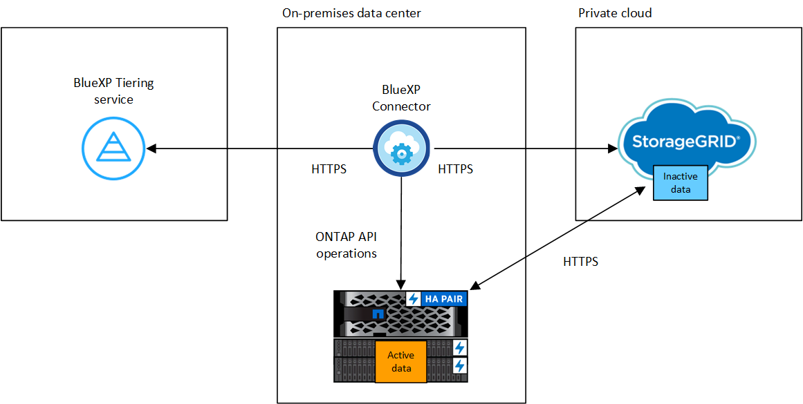

はじめに
はじめに
オンプレミスの ONTAP クラスタから StorageGRID へデータを階層化する
 変更を提案
変更を提案
アクセス頻度の低いデータを StorageGRID に階層化することで、オンプレミスの ONTAP クラスタの空きスペースを確保します。
クイックスタート
これらの手順を実行すると、すぐに作業を開始できます。また、残りのセクションまでスクロールして詳細を確認することもできます。
 データを StorageGRID に階層化する準備をします
データを StorageGRID に階層化する準備をします次のものが必要です。
-
ONTAP 9.4 以降を実行しているオンプレミスの ONTAP クラスタと、ユーザが指定したポートから StorageGRID への接続。 "クラスタの検出方法について説明します"。
-
StorageGRID 10.3 以降で、 S3 権限を持つ AWS アクセスキーが使用されています。
-
オンプレミスにインストールされているコネクタ。
-
ONTAP クラスタ、StorageGRID 、およびBlueXP階層化サービスへのアウトバウンドHTTPS接続を可能にするコネクタのネットワーク。
 階層化をセットアップする
階層化をセットアップするBlueXPでは、オンプレミスの作業環境を選択し、階層化サービスの*Enable*をクリックして、指示に従ってデータをStorageGRID に階層化します。
要件
ONTAP クラスタのサポートを確認し、ネットワークをセットアップし、オブジェクトストレージを準備します。
次の図は、各コンポーネントとその間の準備に必要な接続を示しています。


|
コネクタと StorageGRID 間の通信は、オブジェクトストレージのセットアップにのみ使用されます。 |
ONTAP クラスタの準備
データを StorageGRID に階層化するときは、 ONTAP クラスタが次の要件を満たしている必要があります。
- サポートされている ONTAP プラットフォーム
-
-
ONTAP 9.8 以降： FAS システム、またはオール SSD アグリゲートまたはオール HDD アグリゲートを使用する AFF システムからデータを階層化できます。
-
ONTAP 9.7 以前を使用している場合： AFF システムまたはオール SSD アグリゲートを使用する FAS システムからデータを階層化できます。
-
- サポートされる ONTAP のバージョン
-
ONTAP 9.4 以降
- ライセンス
-
データをStorageGRID に階層化する場合、BlueXPアカウントにはBlueXP階層化ライセンスは必要ありません。また、ONTAP クラスタにFabricPool ライセンスは必要ありません。
- クラスタネットワークの要件
-
-
ONTAP クラスタは、ユーザ指定のポートを使用してStorageGRID ゲートウェイノードへのHTTPS接続を開始します（このポートは階層化のセットアップ時に設定可能です）。
ONTAP は、オブジェクトストレージとの間でデータの読み取りと書き込みを行います。オブジェクトストレージが開始されることはなく、応答するだけです。
-
コネクタからのインバウンド接続が必要です。この接続はオンプレミスにある必要があります。
クラスタとBlueXP階層化サービスの間の接続は必要ありません。
-
階層化するボリュームをホストする各 ONTAP ノードにクラスタ間 LIF が 1 つ必要です。LIF は、 ONTAP がオブジェクトストレージへの接続に使用する IPspace に関連付けられている必要があります。
-
- サポートされるボリュームとアグリゲート
-
BlueXPの階層化で階層化できるボリュームの総数は、ONTAP システムのボリュームの数よりも少なくなることがあります。これは、一部のアグリゲートからボリュームを階層化できないためです。については、ONTAP のドキュメントを参照してください "FabricPool でサポートされていない機能"。
|
|
BlueXPの階層化では、ONTAP 9.5以降でFlexGroup ボリュームがサポートされます。セットアップは他のボリュームと同じように機能します。 |
ONTAP クラスタを検出しています
コールドデータの階層化を開始する前に、オンプレミスのONTAP 作業環境をBlueXPキャンバスに作成する必要があります。
StorageGRID を準備しています
StorageGRID は、次の要件を満たす必要があります。
- サポートされている StorageGRID のバージョン
-
StorageGRID 10.3 以降がサポートされます。
- S3 クレデンシャル
-
StorageGRID への階層化をセットアップするときは、S3のアクセスキーとシークレットキーを使用してBlueXPの階層化を提供する必要があります。BlueXPの階層化サービスでは、このキーを使用してバケットにアクセスします。
これらのアクセスキーは、次の権限を持つユーザに関連付ける必要があります。
"s3:ListAllMyBuckets", "s3:ListBucket", "s3:GetObject", "s3:PutObject", "s3:DeleteObject", "s3:CreateBucket" - オブジェクトのバージョン管理
-
オブジェクトストアバケットで StorageGRID オブジェクトのバージョン管理を有効にすることはできません。
コネクタの作成または切り替え
データをクラウドに階層化するにはコネクタが必要です。データを StorageGRID に階層化する場合は、オンプレミスのコネクタが必要です。新しいコネクターをインストールするか、現在選択されているコネクターがオンプレミスにあることを確認する必要があります。
コネクタのネットワークを準備しています
コネクタに必要なネットワーク接続があることを確認します。
-
コネクタが取り付けられているネットワークで次の接続が有効になっていることを確認します。
-
ポート443経由でBlueXP階層化サービスへのHTTPS接続 ("エンドポイントのリストを参照してください")
-
StorageGRID システムへのポート443経由のHTTPS接続
-
ONTAP クラスタ管理 LIF へのポート 443 経由の HTTPS 接続
-
最初のクラスタから StorageGRID にアクセス頻度の低いデータを階層化しています
環境を準備したら、最初のクラスタからアクセス頻度の低いデータの階層化を開始します。
-
StorageGRID ゲートウェイノードのFQDNと、HTTPS通信に使用するポート。
-
必要な S3 権限を持つ AWS アクセスキー。
-
オンプレミスのONTAP 作業環境を選択します。
-
右側のパネルで、階層化サービスの*有効化*をクリックします。
StorageGRID 階層化のデスティネーションがキャンバス上に作業環境として存在する場合は、クラスタをStorageGRID 作業環境にドラッグしてセットアップウィザードを開始できます。

-
オブジェクトストレージ名の定義：このオブジェクトストレージの名前を入力します。このクラスタのアグリゲートで使用する可能性のある他のオブジェクトストレージから一意である必要があります。
-
プロバイダーを選択：* StorageGRID *を選択し、*続行*をクリックします。
-
Create Object Storage *ページで次の手順を実行します。
-
サーバ：StorageGRID ゲートウェイノードのFQDN、ONTAP がStorageGRID とのHTTPS通信に使用するポート、および必要なS3権限を持つアカウントのアクセスキーとシークレットキーを入力します。
-
* Bucket * ：新しいバケットを追加するか、 prefix_fabric-pool_ で始まる既存のバケットを選択し、 * Continue * をクリックします。
コネクタの IAM ポリシーではインスタンスが指定したプレフィックスのバケットに対して S3 処理を実行できるため、 fabric-pool_prefix が必要です。たとえば、 S3 バケット _fabric-pool-AFF1、 AFF1 はクラスタの名前です。
-
* クラスタネットワーク * ： ONTAP がオブジェクトストレージへの接続に使用する IPspace を選択し、「 * 続行」をクリックします。
正しいIPspaceを選択すると、BlueXPの階層化でONTAP からStorageGRID オブジェクトストレージへの接続をセットアップできます。
「最大転送速度」を定義して、アクセス頻度の低いデータをオブジェクトストレージにアップロードするためのネットワーク帯域幅を設定することもできます。[Limited]ラジオボタンを選択して使用できる最大帯域幅を入力するか、[*Unlimited *]を選択して制限がないことを示します。
-
-
_Tier Volume_page で、階層化を設定するボリュームを選択し、階層化ポリシーページを起動します。
-
すべてのボリュームを選択するには、タイトル行（
 ）をクリックし、 * ボリュームの設定 * をクリックします。
）をクリックし、 * ボリュームの設定 * をクリックします。 -
複数のボリュームを選択するには、各ボリュームのボックス（
 ）をクリックし、 * ボリュームの設定 * をクリックします。
）をクリックし、 * ボリュームの設定 * をクリックします。 -
単一のボリュームを選択するには、行（または）をクリックします
 アイコン）をクリックします。
アイコン）をクリックします。
-
-
_Tiering Policy_Dialog で、階層化ポリシーを選択し、必要に応じて選択したボリュームのクーリング日数を調整して、 * 適用 * をクリックします。

これで、クラスタのボリュームから StorageGRID へのデータ階層化が設定されました。
クラスタ上のアクティブなデータとアクセス頻度の低いデータに関する情報を確認できます。 "階層化設定の管理について詳しくは、こちらをご覧ください"。
また、クラスタの特定のアグリゲートのデータを別のオブジェクトストアに階層化したい場合に、追加のオブジェクトストレージを作成することもできます。または、階層化データが別のオブジェクトストアにレプリケートされているFabricPool ミラーリングを使用する予定の場合も同様です。 "オブジェクトストアの管理に関する詳細情報"。